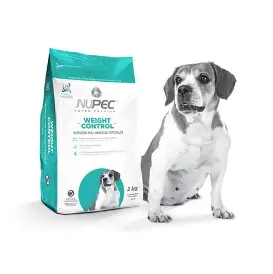
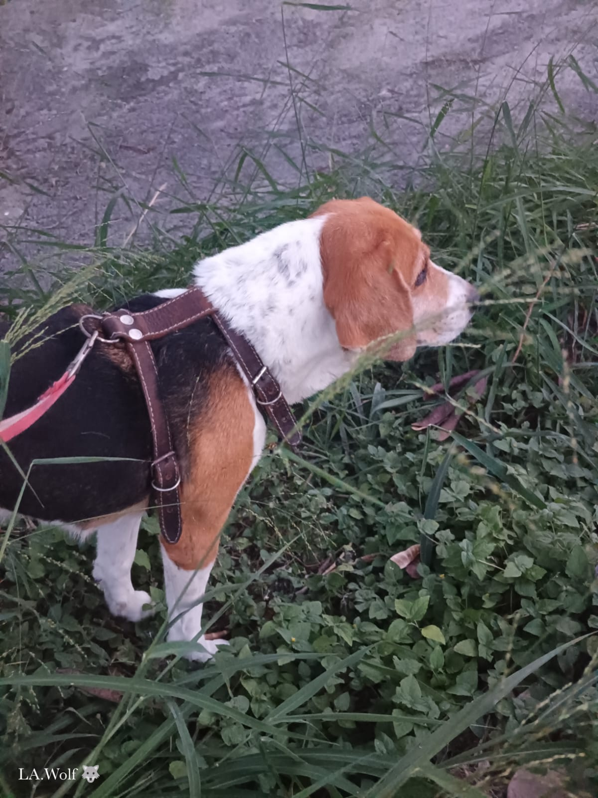
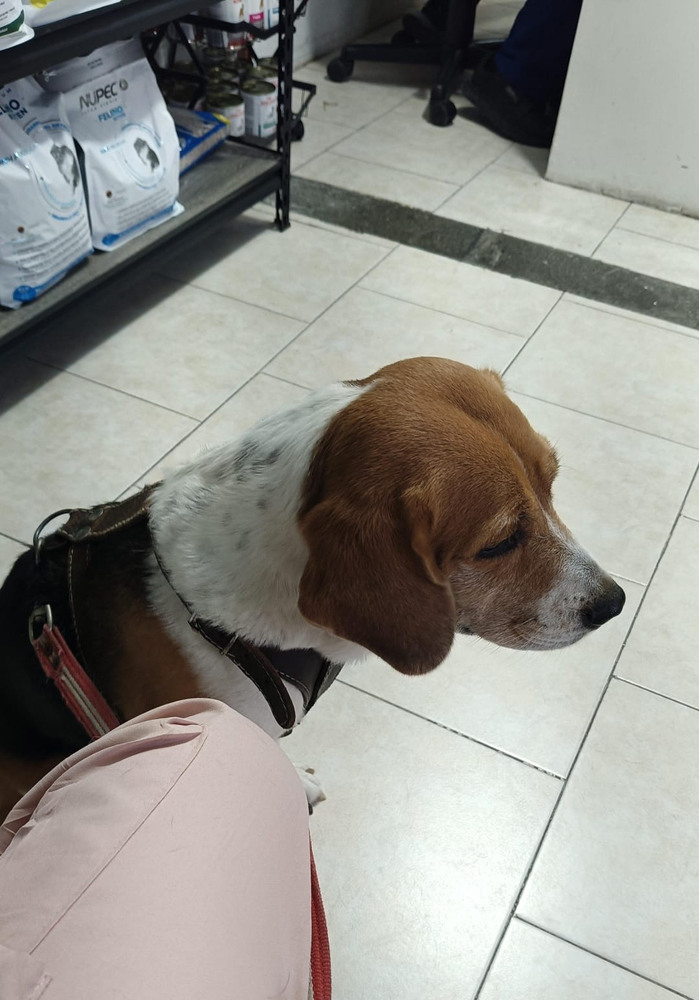

Cuidados
Conforme su peso, marca y tipo de croquetas que consume, al dia le doy de 150 a 190 gramos.
Actualmente, como es una perrita considerada de la tercera edad, le doy media pastilla de suplemento para sus huesos (CartiPet's C10).
Como no puedo estar todo el dia en casa, suelo darle juguetes y botellas ya que le gusta jugar con ellas, ademas, en mis dias libres salimos a pasear.



Su rutina diaria
- 4:30 am: desayuno
- 7:00 am: toma el sol
- 9:00 pm: cena
- 10:00 pm: a dormir
Consejos de cuidado
Actualmente esta comiendo la croqueta Nupec Weight control. Adicionalmente
le suelo dar algunas veces res, pollo o pescado en pequeñas cantidades.
Ella va al veterinario cada 3 meses para sus desparacitaciones
y cada año para sus 3 vacunas correspondiatentes, estas vacunas son: Rabigen Mono,
Canigen MHA2 PPi/L y Bronchicine CAe.
Al ser una raza de orejas largas hay que tener especial cuidado en esta zona,
cada semana le reviso las orejas comprobando su estado y ver si se limpian o no, ya que mucha limpieza tambien
puede irritar la zona; sus baños son 1 o dos veces al año y sus garritas se las corto una vez cada 5 meses.